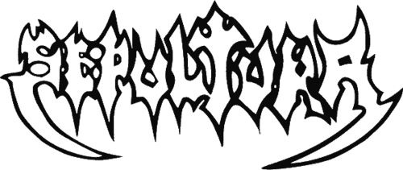

A Sepultura egy brazil heavy metal zenekar Belo Horizonte-ból, melyet 1984-ben alapított Max és Igor Cavalera testvérek. A zenekar meghatározó alakja volt a groove metal, a thrash metal és a death metal műfajoknak az 1980-as évek végén és az 1990-es évek elején, és szerves részét képezte a deathrash hangzásvilágának is. Stílusuk az évek során sokat változott, a zenekar hangzását az alternatív metal, a világzene, a nu metal, a progresszív rock, a hardcore punk és az industrial metal hatásaival és textúráival ötvözte. A Sepulturát a thrash metal második hullámának is tekintik, amely az 1980-as évek végétől az 1990-es évek elejéig-közepéig tartott.
A Sepultura eddig tizenöt stúdióalbumot adott ki. A zenekar 1986-ban adta ki debütáló albumát, a Morbid Visionst , majd egy évvel később a Schizophrenia- t. Ez utóbbi album felkeltette a Roadrunner Records figyelmét, akik 1988-ban szerződtették le a Sepulturát. Harmadik albumuk, és egyben a Roadrunner debütáló albumuk, a Beneath the Remains (1989) volt a zenekar nemzetközi áttörése. A következő három album – az Arise (1991), a Chaos AD (1993) és a Roots (1996) – megszilárdította a Sepultura hírnevét, mint az 1990-es évek egyik legsikeresebb heavy metal zenekara. A zenekar több mint hárommillió lemezt adott el az Egyesült Államokban, és közel 20 milliót világszerte, és számos arany- és platinalemezt szerzett világszerte, többek között Franciaországban, Ausztráliában, Indonéziában, az Egyesült Államokban, az Egyesült Királyságban, Cipruson, és szülőhazájukban, Brazíliában.
A Sepultura számos tagsági változáson ment keresztül az elmúlt években.42 éves karrier. Max és Igor Cavalera 1996-ban, illetve 2006-ban távoztak. "Klasszikus" felállásuk, amely közel egy évtizedig tartott, Maxból, Igorból, Paulo Jr. basszusgitárosból és Andreas Kisser gitárosból állt . Igor 2006-os távozása óta nem maradtak eredeti tagok a zenekarban. Bár Paulo Jr. csatlakozott a Sepulturahoz röviddel az 1984 végén történt megalakulása után, és ő a leghosszabb ideje tag, a Chaos AD-ig egyetlen stúdióalbumukon sem lépett fel. Kisser, aki Jairo Guedz korábbi gitárosát váltotta , a Schizophrenia óta minden Sepultura albumon szerepelt . Basszusgitárosként is fellépett a Chaos AD-ig. Jelenlegi felállásukban Paulo Jr., Kisser, Derrick Green frontember (aki 1997-ben váltotta Maxot) és Greyson Nekrutman dobos játszik . 2024 márciusában, több mint négy évtizednyi működés után a zenekar egy kétéves búcsúturnéra indult, amely után feloszlanak; egy EP, a The Cloud of Unknowing (2026) jelent meg a turné utolsó évével egy időben.
A Sepultura zenekart 1984-ben alapította Belo Horizontéban Max és Igor Cavalera testvérek, Vânia modell és a tehetős olasz diplomata, Graciliano fiai, akinek halála anyagilag tönkretettea családot. Graciliano halála mélyen érintette fiait, és arra inspirálta őket,hogy zenekart alapítsanak, miután Max még aznap meghallotta a Black Sabbath 1972-es Vol. 4 című albumát. A Sepultura nevet, ami portugálul sírt jelent, akkor választották, amikor Max lefordította a Motörhead "Dancing on Your Grave" című dalának szövegét. A testvérek korábban egy feldolgozászenekarban játszottak.
Hatással voltak rájuk olyan brazil metal zenekarok is, mint a Stress , a Sagrado Inferno és a Dorsal Atlântica. 1984-re otthagyták az iskolát. Több korai tagcsere után a Sepultura stabil felállást hozott létre Max gitárosból, Igor dobosból, Wagner Lamounier énekesből és Paulo Jr. basszusgitárosból. Lamounier 1985 márciusában távozott, és az úttörő brazil black metal zenekar, a Sarcófago vezetője lett. Max vette át az éneklési feladatokat, Jairo Guedz pedig csatlakozott a zenekarhoz szólógitárosként.
Egy évnyi fellépés után a Sepultura 1985-ben leszerződött a Cogumelo Recordshoz. Még ugyanebben az évben kiadták a Bestial Devastation című megosztott EP-t a brazil Overdose zenekarral. A felvételek és a producerek mindössze két nap alatt elkészültek. A zenekar 1986 augusztusában vette fel első nagylemezét, a Morbid Visionst . Az album novemberben jelent meg, és tartalmazta a "Troops of Doom" című számot, amely némi médiafigyelmet kapott. A zenekar São Paulóba költözött.